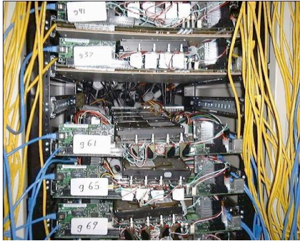
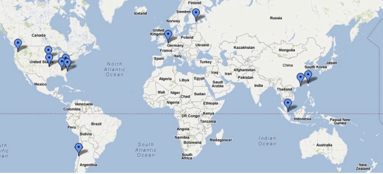
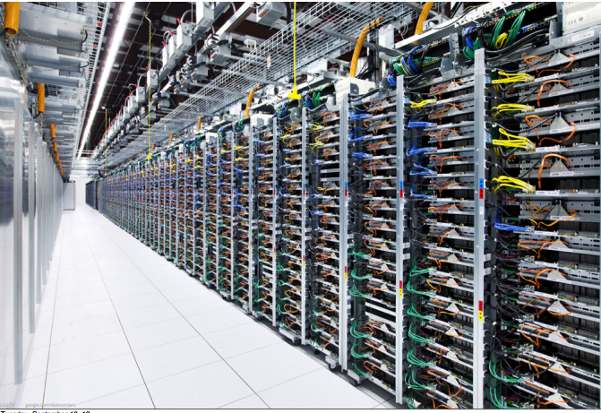
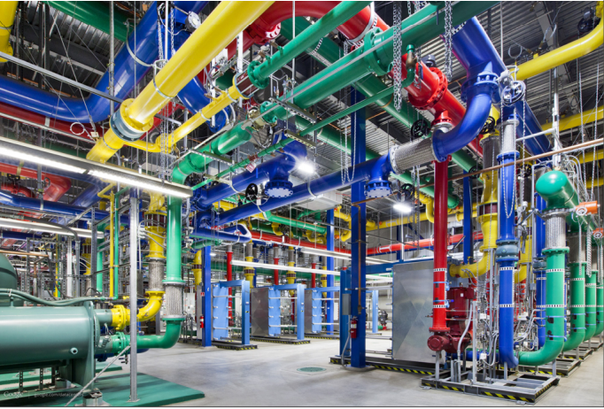

Lessons Learned While Building Infrastructure Software at Google
Table of Contents
1. GFS
- Developed by subset of same people working on indexing system
Identified minimal set of features needed
- e.g. Not POSIX compliant
- actual data was distributed, but kept metadata centralized
- Colossus: Follow-on system developed many years later distributed the metadata
- Lesson: Don’t solve everything all at once
2. MapReduce
- Developed by two people that were also doing the indexing system rewrite
- squinted at various phases with an eye towards coming up with common abstraction
- Initial version developed quickly
- proved initial API utility with very simple implementation
- rewrote much of implementation 6 months later to add lots of the performance wrinkles/tricks that appeared in original paper
- Lesson: Very close ties with initial users of system make things happen faster
- in this case, we were both building MapReduce and using it simultaneously
3. BigTable
- no distributed transactions, no cross-row joins
- initial design was just in a single cluster
- follow-on work added eventual consistency across many geographically distributed BigTable instances
4. Spanner
- Several variations of eventual client API
- Started to develop with many possible customers in mind, but no particular customer we were working closely with
- Eventually we worked closely with Google ads system as initial customer
- Different API than BigTable
- Harder to move users with existing heavy BigTable usage
5. Designing & Building Infrastructure
- Identify common problems, and build software systems to address them in a general way
- Important to not try to be all things to all people
- Clients might be demanding 8 different things
- Doing 6 of them is easy
- handling 7 of them requires real thought
- dealing with all 8 usually results in a worse system
- more complex, compromises other clients in trying to satisfy everyone
- Don't build infrastructure just for its own sake:
- Identify common needs and address them
- Don't imagine unlikely potential needs that aren't really there
- Best approach: use your own infrastructure (especially at first!)
- (much more rapid feedback about what works, what doesn't)
- If not possible, at least work very closely with initial client team
- ideally sit within 50 feet of each other
- keep other potential clients needs in mind, but get system
- working via close collaboration with first client first
6. Data Center
cordboards

data centers

machines

cool system
